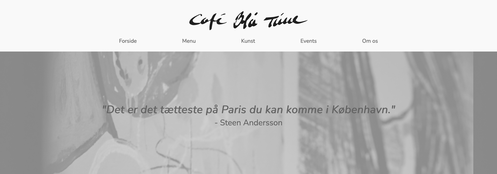

05.02.01 Redesign og temadokumentation
Dette projekt handlede om at redesigne en hjemmeside. Her var jeg en del af en gruppe, og min hovedsagelige rolle var at programmere, selvom jeg også har hjulpet til på andre områder. Jeg lærte her om at være flere til programmere på samme projekt samtidig. Til dette brugte vi github, og kunne på den måde synkronisere vores arbejde uden besvær. Igen er der her arbejdet med en video på hjemmesiden, den er sat ind i html, og senere stylet i css. Jeg har også lært at bruge billeder som baggrund på hjemmesider, det ses i css kodningen "background-image: url(""..."");".
